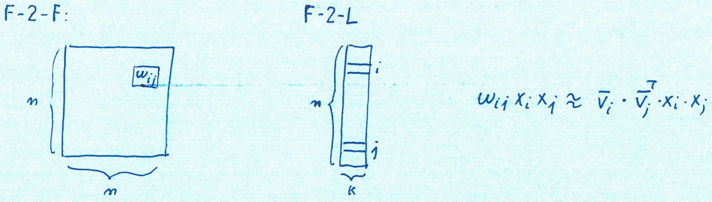

Invented by Steffen Rendle, now Google Research:
Instance:
a collection (dataset) \(\mathbf{D}\) of \(m\) numerical datapoints (points in \(\mathbb{R}^n\))
a classification system \(C = \{c_1, c_2, \dots c_k\}\)
Solution: classification function \(\gamma: \mathbf{X} \rightarrow C\)
Measure: misclassification
[PF] “classification predicts whether something will happen, whereas regr. predicts how much something will happen.”
Estimate the rating for the new user/film combination \(\mathbf{x_8}\): most cells are 0, \(y_8\) is unknown.
We face sparsity.
\(\mathbf{D}= \{(\mathbf{x}^{(1)}, y^{(1)}), (\mathbf{x}^{(2)}, y^{(2)}), \dots \}\)
Find rating estimate function \(Y: \mathbb{R}^n \rightarrow T\) s.t.
\(T=\mathbb{R}\) for regression,
\(T=\{+, -\}\) for classification.
\(\mathbf{\hat{D}}= \{(\mathbf{x}^{(m+1)}, Y(y^{(m+1)}), (\mathbf{x}^{(m+2)}, Y(y^{(m+2)}), \dots \}\)
Note: Rendle uses different letters; here n=dimensions(\(\mathbf{D}\)))
\(\mathbf{D}= \{\mathbf{x}^{(a)}, \mathbf{x}^{(b)}\dots \}\)
re-arrange the rows so that \(\mathbf{x}^{(a)}\) maps higher than \(\mathbf{x}^{(b)}\) and so on.
Ideal for Top-k searchs and recommendations
extend linear regression to capture synergetic effects between variables:
introduce a minimal quadratic effect \(x_i x_j\)
fill the table by looking at values on the same row or column of the target cell
\[\hat{y}(\mathbf{x}) := w_0 + \sum_{i=1}^{n} w_i x_i \]
an initial (fixed) bias + linear regression.
To look at quadratic interactions, fix \(d=2:\)
\[\hat{y}(\mathbf{x}) := w_0 + \sum_{i=1}^{n} w_i x_i + \sum_{i=1}^{n}\sum_{j=i+1}^{n} w_{ij}x_i x_j \]
lots of training to find out all \(n^2\) coefficients \(w_{ij}\)
the \(w_{ij}\)’s may not even be significant (too close to 0)
computing even a single prediction costs \(\Theta(n^2)\)
fix d=2 and a small integer k (e.g., # of genres)
build a model of how the \(n\) dimensions relate to the \(k\) genres: a \(V_{n\times k}\) matrix
\[W = V \cdot V^T \ \Rightarrow w_{ij} = \mathbf{v}^T_i\cdot \mathbf{v}_j = <\mathbf{v}_i, \mathbf{v}_j> \]
Key point: \(W\) contains \(\frac{n^2}{2}-\frac{n}{2}\) estimates while the equivaleny \(V\) only has \(n\cdot k\) (latent) estimates.
\[\hat{y}(\mathbf{x}) := w_0 + \sum_{i=1}^{n} w_i x_i + \sum_{i=1}^{n}\sum_{j=i+1}^{n} <\mathbf{v}_i, \mathbf{v}_j>x_i x_j \]
Where the inner/dot product is
\[ <\mathbf{v}_i, \mathbf{v}_j> = \mathbf{v}^T_i\cdot \mathbf{v}_j = \sum_{f=1}^{k} v_{if} v_{jf} \]
\(\hat{w}_{i,j} := <\mathbf{v}_i, \mathbf{v}_j>\) models the interaction between the i-th and j-th variable.
Instead of using an own model parameter \(w_{i,j}\in \mathbb{R}\) for each interaction, the FM models the interaction by factorizing it.
We will see later on, that this is the key point which allows high quality parameter estimates of higher-order interactions (\(d \ge 2\)) under sparsity.
\[\hat{y}(\mathbf{x}) := w_0 + \sum_{i=1}^{n} w_i x_i + \sum_{i=1}^{n}\sum_{j=i+1}^{n} <\mathbf{v}_i, \mathbf{v}_j>x_i x_j \]
where
\[ <\mathbf{v}_i, \mathbf{v}_j> = \mathbf{v}^T_i\cdot \mathbf{v}_j = \sum_{f=1}^{k} v_{if} v_{jf} \]
How can this be computed in \(\Theta(kn)=\Theta(n)\) iteration?
\[\sum_{i=1}^{n}\sum_{j=i+1}^{n} <\mathbf{v}_i, \mathbf{v}_j>x_i x_j\]
Insight: \(i\) and \(j\) never appear together: their iteration can be separated.
Idea: iterate over \(k\) outside, push \(i\) and \(j\) iterations inside.
libfm.org is the repository for the ‘official’ C++ implementation of FMs, which ended in 2014.
provides a new environment for running FMs within Python.
from pyfm import pylibfm
from sklearn.feature_extraction import DictVectorizer
import numpy as np
train = [
{"user": "1", "item": "5", "age": 19},
{"user": "2", "item": "43", "age": 33},
...
]four users, four items: 8 columns
What is the estimated appreciation of user 1, aged 24 now, for item 10 once he or she buys it?
Rendle proved that an intrisically quadratic activity: compute all possible second-order, \(x_i\cdot x_j\), effects, can be done in a time linear and not quadratic in n.
\(\hat{y}(\textbf{x}) = w_{0} + \sum_{i=1}^{n} w_{i} x_{i} + \sum_{i=1}^n \sum_{j=i+1}^n w_{ij} x_{i} x_{j}\)
To do so, Rendle models feature interactions by learning \(k\) latent factors:
\(\langle \textbf{v}_i, \textbf{v}_{j} \rangle = \sum_{f=1}^k v_{i,f} v_{j,f}\)
While computing the mathematical formula for polynomial regression takes \(\Theta(n^2)\) ops., Rendle does it in \(\Theta(kn)\).
Notice how summing over different pairs is equivalent to summing over all pairs minus the self-interactions (divided by 2):
a correction factor \(\frac{1}{2}\) is introduced from the beginning of the derivation.
\(\sum_{i=1}^n \sum_{j=i+1}^n \langle \textbf{v}_i, \textbf{v}_{j} \rangle x_{i} x_{j}\)
\(= \frac{1}{2} \sum_{i=1}^n \sum_{j=1}^n \langle \textbf{v}_i, \textbf{v}_{j} \rangle x_{i} x_{j} - \frac{1}{2} \sum_{i=1}^n \langle \textbf{v}_i , \textbf{v}_{i} \rangle x_{i} x_{i}\)
\(\sum_{i=1}^n \sum_{j=i+1}^n \langle \textbf{v}_i, \textbf{v}_{j} \rangle x_{i} x_{j}\)
\(= \frac{1}{2} \sum_{i=1}^n \sum_{j=1}^n \langle \textbf{v}_i, \textbf{v}_{j} \rangle x_{i} x_{j} - \frac{1}{2} \sum_{i=1}^n \langle \textbf{v}_i , \textbf{v}_{i} \rangle x_{i} x_{i}\)
\(= \frac{1}{2}\left(\sum_{i=1}^n \sum_{j=1}^n \sum_{f=1}^k v_{i,f} v_{j,f} x_{i} x_{j} \right) - \frac{1}{2}\left( \sum_{i=1}^n \sum_{f=1}^k v_{i,f} v_{i,f} x_{i} x_{i} \right)\)
\(= \frac{1}{2}\left(\sum_{i=1}^n \sum_{j=1}^n \sum_{f=1}^k v_{i,f} v_{j,f} x_{i} x_{j} - \sum_{i=1}^n \sum_{f=1}^k v_{i,f} v_{i,f} x_{i} x_{i} \right)\)
\(= \frac{1}{2}\left(\sum_{i=1}^n \sum_{j=1}^n \sum_{f=1}^k v_{i,f} v_{j,f} x_{i} x_{j} - \sum_{i=1}^n \sum_{f=1}^k v_{i,f} v_{i,f} x_{i} x_{i} \right)\)
\(= \frac{1}{2} \sum_{f=1}^{k} \left( \left(\sum_{i=1}^n v_{i,f}x_{i} \right) \left( \sum_{j=1}^n v_{j,f}x_{j} \right) - \sum_{i=1}^{n} v_{i,f}^2 x_{i}^2 \right)\)
\(= \frac{1}{2} \sum_{f=1}^{k} \left( \left( \sum_{i=1}^{n} v_{i,f}x_{i} \right)^2 - \sum_{i=1}^{n} v_{i,f}^2 x_{i}^2 \right)\)
Now the summations in i are inside the k summation but separated from each other.
Substituting back into the factorization machine formula:
\(\hat{y}(\textbf{x}) = w_{0} + \sum_{i=1}^{n} w_{i} x_{i} + \frac{1}{2} \sum_{f=1}^{k} \left( \left( \sum_{i=1}^{n} v_{i,f}x_{i} \right)^2 - \sum_{i=1}^{n} v_{i,f}^2 x_{i}^2 \right)\)